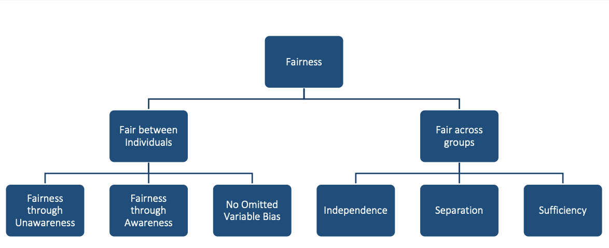

Step 1: Define fairness
A practical framework for fair algorithmic pricing
What is fair?
Consider a motor insurer that has just removed gender from its pricing model in response to regulatory pressure. The actuarial team is confident the model is fairer than before. But a closer look reveals that postcode, vehicle engine size, and annual mileage are still in the model, and in the data they happen to correlate with gender. The model no longer uses gender directly, but its outputs still reflect it. Has the insurer achieved fairness?
The answer depends entirely on which question you ask. Is the test whether the protected attribute is in the model? Whether average premiums are equal across groups? Whether individuals from different groups are treated the same way given the same risk profile? Different stakeholders, and different legal systems, give different answers. Settling that question is what this step is for.
A useful starting point is the framing of Frees and Huang (2023): what are the principles for assessing the appropriateness of insurance differentiation? There is no single answer that fits every product and jurisdiction. This step works through three lenses that together cover the relevant ground. Most of the technical content in this playbook develops the first two. The third deserves attention even when it is not the primary focus.
| Lens | What it emphasises | Where to read |
|---|---|---|
| Anti-discrimination | Legal obligation to avoid unfair treatment and unjustified disparate outcomes | Pricing feature principles through Fairness criteria |
| Competing ethical notions | Actuarial fairness, social justice, and how risk should be pooled | Principles of fair differentiation through Actuarial fairness |
| Consumer trust | Promises made in contracts, disclosures, and market conduct | Consumer trust (brief) |
These lenses do not always point in the same direction. A pricing system can be legally compliant and still strike many customers as unfair. A system built on actuarial fairness (each customer pays their own expected cost) may produce outcomes that disadvantage historically marginalised groups. A system designed to achieve group parity may charge some customers more than their expected cost warrants, raising questions of efficiency and adverse selection. Working through these lenses is not about finding a single correct answer. It is about making the trade-offs visible so the right people in your organisation can make an informed decision before any model is built.
Anti-discrimination
This lens asks whether pricing complies with anti-discrimination law on both how people are rated and what outcomes groups receive, and whether rating variables and model outputs meet recognised fairness tests. The sections below cover how to judge individual rating factors and the quantitative criteria used in later steps.
Many rating variables are routine. Others, such as ethnicity, heritage, or religion, are forbidden in most markets. The hard cases are variables that are legal on their face but may act as proxies for protected attributes, especially under machine learning and large-scale data analytics.
Pricing feature principles
Deciding whether to use a rating variable is not a purely statistical question. A variable might predict claims reliably yet still be inappropriate to use, while a weaker predictor might be clearly defensible. The six principles below, drawn from Frees and Huang (2023), provide a structured way to think through that judgement for any rating factor under review.
| Principle | Question | Illustration |
|---|---|---|
| Control | Can the customer influence the feature? | Owning a sports car is partly controllable. Gender, race, and nationality are not. |
| Mutability | Does it change over time or stay fixed? | Age changes. Many sensitive attributes are fixed at birth. |
| Statistical discrimination | Does it predict cost or risk? | Predictive value is necessary but not sufficient for fair use. |
| Causality | Does it cause the priced outcome? | A variable known to cause the insured event (e.g. certain health conditions in life insurance) is easier to defend. |
| Past discrimination | Does use reinforce historical injustice? | Skin colour has a heavier history of misuse than eye colour. |
| Socially valuable behaviour | Does pricing discourage beneficial actions? | Penalising participation in genetic testing may discourage research and prevention. |
Control matters because there is broad consensus that people should not be penalised for characteristics they cannot change. Statistical discrimination matters because a variable with no predictive power is hard to defend on actuarial grounds even if it raises no other concerns. But predictive power alone is not enough: a high-performing predictor can still be problematic if it also fails on causality, history, or socially valuable behaviour.
The most difficult variables tend to be those that score well on some principles and poorly on others. Credit-based insurance scores are a good example. They predict insurance losses reasonably well, but their causal link to claim risk is unclear, they correlate with race and income, and restricting insurance access based on credit history may discourage financially vulnerable people from seeking coverage. Different jurisdictions have reached different conclusions about these scores. That illustrates why the six principles are an input to a judgement, not a rule that replaces it.
Whether a variable is ultimately acceptable depends on line of business and jurisdiction (Frees and Huang 2023; Xin and Huang 2024). Gender in pricing is routine in US motor insurance yet prohibited across the EU. Genetic information is a prohibited underwriting factor in health insurance in many countries but remains largely unregulated in life insurance in others. The principles provide the vocabulary for that discussion; legal and compliance teams need to supply the jurisdiction-specific answer.
Risk-based and non-risk differentiation
Not every price difference reflects expected claim cost. Frees and Huang (2023) distinguishes risk-based differentiation (premiums that differ because expected losses differ) from non-risk differentiation (premiums that differ for the same underlying risk, for example because of retention modelling, willingness to pay, or price optimization).
Risk-based rating is the norm in actuarial pricing and is usually defended on efficiency grounds. Non-risk differentiation is more contested. It can be lawful in some markets yet still raise fairness concerns when loyal or less sophisticated customers pay more than risk-identical shoppers, or when behavioural factors reproduce group disparities (Xin and Huang 2024). Several U.S. states restrict price optimization for this reason. Step 3 examines welfare effects when pricing moves beyond technical costs.
Mini-glossary
Symbols and terms used across Steps 1–4.
| Term | Plain language |
|---|---|
| Protected attribute (X_P) | A characteristic the law or policy treats as off-limits for direct discrimination (e.g. race, gender, ethnicity) |
| Other features (X_{NP}) | Rating variables not treated as protected |
| Predicted outcome (\hat{Y}) | The model output you will test. Often an estimated cost or a quoted premium |
| Proxy discrimination (PD) | A non-protected variable acts as a stand-in for a protected attribute |
| Legitimate factors | Risk-related variables regulators accept as grounds for price variation |
Fairness criteria
The criteria below are illustrative examples used in this playbook and in much insurance fairness work. They are not an exhaustive list. Your jurisdiction, product line, and regulator may require a different criterion.
Let X_P be a protected attribute, X_{NP} other features, and \hat{Y} the predicted price (or cost estimate used to set price) (Xin and Huang 2024).
Playbook criteria
These are the criteria implemented in Steps 2–4 of this playbook (Xin and Huang 2024).
| Type | Criterion | Definition |
|---|---|---|
| Individual | Fairness through unawareness (FTU) | \hat{Y} does not use X_P |
| Individual | Controlling for the protected variable (CPV) | Average full-model predictions over X_P at scoring time (sometimes called a discrimination-free price) |
| Group | Demographic parity (DP) | Equal distribution of \hat{Y} across protected groups |
| Group | Conditional demographic parity (CDP) | Equal distribution of \hat{Y} across groups within each legitimate subgroup |
| Group | Separation / sufficiency | Equalised prediction errors across groups (separation) or equal calibration of \hat{Y} to outcomes (sufficiency) |
Broader taxonomy
Krafcheck, Balnozan, and Huang (2026) survey a wider set of criteria for life insurance. The taxonomy distinguishes individual and group fairness.

Individual fairness (Krafcheck, Balnozan, and Huang 2026). Examples below are adapted from the SoA report (life insurance).
| Criterion | Plain language | Example |
|---|---|---|
| Fairness through unawareness | Leave protected or sensitive variables out of the model | No sensitive rating variables used in underwriting |
| Fairness through awareness (Dwork et al. 2012) | Similar individuals (by a similarity metric that accounts for known disparities) receive similar predictions or prices | Same premium for applicants with the same risk score within a group, after adjusting the score for known disparities (e.g. healthcare access by race or ethnicity) |
| No omitted-variable bias | Diagnose proxy relationships with protected attributes and adjust for their effect on outputs | Remove the effect of race or ethnicity on model outputs after diagnosing proxy relationships |
Group fairness (Krafcheck, Balnozan, and Huang 2026). Examples below are adapted from the SoA report (life insurance).
| Criterion | Plain language | Example |
|---|---|---|
| Independence | \hat{Y} is statistically independent of the protected attribute | Equal rejection rates for life insurance applications across race and ethnicity classes |
| Separation | After conditioning on the true outcome, \hat{Y} is independent of the protected attribute | Equal likelihood of fraud investigation or policy rescission across groups, once controlling for whether fraud was ultimately detected |
| Sufficiency | After conditioning on \hat{Y}, the true outcome is independent of the protected attribute | Equal distribution of claims across groups at each estimated mortality risk score |
How the frameworks relate
| Playbook criterion | Related criterion in Krafcheck, Balnozan, and Huang (2026) |
|---|---|
| Fairness through unawareness (FTU) | Fairness through unawareness |
| Controlling for the protected variable (CPV) | No omitted-variable bias |
| Demographic parity (DP) | Closely related to independence |
| Conditional demographic parity (CDP) | Special case of independence, conditioning on legitimate factors |
| Separation / sufficiency | Same names in the SoA taxonomy |
Achieving individual and group fairness simultaneously is often impossible (Krafcheck, Balnozan, and Huang 2026; Xin and Huang 2024). The trade-off between criteria is itself part of the fairness discussion.
Choosing a criterion for your regime
Regulation can constrain inputs (which variables or pricing procedures are allowed) or outputs (quantitative tests on premiums or costs) (Xin and Huang 2024). Most regimes still emphasise inputs (prohibited or restricted variables). Effects-oriented rules are growing, including unisex pricing in the EU, disparate-impact-style tests in some U.S. proposals, and bans on non-risk price optimization. Prohibition on protected variables often points toward individual criteria (FTU, CPV); disparate-impact or community-rating rules often point toward group criteria (DP, CDP). Match the criterion you adopt to your regime before modelling in Step 2.
Competing ethical notions
This lens asks which differentiations are appropriate in the first place, given how a product is positioned in the market. It is less about legal tests than about solidarity, efficiency, and the social role of insurance. Insurance pricing is not the only place fairness matters. Differentiation also arises in issuance, renewal, cancellation, coverage terms, marketing, and claims handling (Frees and Huang 2023). Refusing to issue or renew cover, or restricting benefits, can harm disadvantaged groups more sharply than premium differences alone.
Principles of fair differentiation
Algorithmic pricing is built on differentiation. Customers with different expected costs or willingness to pay may receive different prices. The question is which differentiations are appropriate (Frees and Huang 2023).

Actuarial fairness
Actuarial fairness is the idea that each policyholder should pay for their own risk and only their own risk (Frees and Huang 2023). It is the dominant logic when insurance is sold as a commercial product by a stock insurer, where the pool is a collection of bilateral contracts rather than a shared community. From this perspective, charging a high-risk customer a low-risk premium is unfair to low-risk customers who effectively cross-subsidise them.
The fairness standard shifts with who owns the pool. Government schemes and social insurance routinely accept cross-subsidy as a policy objective. Mutual and takaful (Islamic cooperative insurance) arrangements can carry stronger solidarity expectations than stock-company markets, even when those firms compete on similar rating factors.
The conflict between actuarial fairness and solidarity is most visible in health insurance, where most developed countries have moved toward some form of community rating or mandatory risk pooling. In motor insurance, the tension appears when regulators prohibit actuarially justified rating factors. The EU’s ban on gender-based pricing in 2012 is the clearest example: the European Court of Justice held that equal treatment of men and women took precedence over gender being a statistically valid predictor of motor claims (ECJ 2011). The ban did not eliminate the underlying risk difference between male and female drivers in certain age groups. It redistributed who pays for it, requiring low-risk female drivers and high-risk male drivers in the same age bracket to pay the same premium. Whether that is fairer depends on whether you view motor insurance as an economic commodity or a social arrangement.
Risk-based pricing and cross-subsidy are both defensible in different product contexts. The key is to make the position explicit before the model is built, rather than discovering it implicitly in the audit.
Consumer trust
The third lens is about whether pricing honours what the firm has promised customers and what the market expects, not only whether a model passes a legal or statistical test.
Insurers make implicit and explicit commitments through product disclosure, marketing, codes of practice, and the consistency between quoted and filed rates. Insurance contracts also rely on utmost good faith (the principle that both parties disclose all material information honestly): customers are expected to answer underwriting questions honestly, while insurers hold far more data and modelling capability (Frees and Huang 2023). That imbalance matters for trust. Consumers often struggle to compare policies or verify that a quoted premium reflects risk rather than retention or shopping behaviour.
A price can be compliant yet feel unfair if it diverges from those promises, changes without clear explanation, or uses information gathered for underwriting in ways customers did not expect. Non-risk differentiation, including price optimization that penalises loyal or less price-sensitive customers, is a recurring source of consumer concern (Frees and Huang 2023; Xin and Huang 2024). Big data and machine learning can widen the gap if insurers can segment more finely while customers lack equivalent tools to compare offers.
Conversely, transparent communication about why prices differ (for example, risk-based rating on controllable factors) can support trust even where premiums are not equal across groups. Compliance with anti-discrimination rules is necessary but not sufficient for this lens. Product, legal, and communications teams should align on what customers are told about how prices are set and how that aligns with the technical choices in the sections above.
Checklist
Use this checklist to confirm Step 1 decisions before moving to model design. Assign an owner for each item and record sign-off.
| Task | Typical owner |
|---|---|
| Discuss which fairness lenses matter for your product (anti-discrimination, competing ethical notions, consumer trust) | Executive sponsor / Product |
| Document applicable regulations and filing requirements | Legal / Compliance |
| Identify relevant fairness metrics (e.g. conditional demographic parity (CDP), proxy discrimination (PD)) for your context | Product / Policy |
| Specify outcome \hat{Y} and legitimate factors for conditional demographic parity (CDP) | Actuarial / Model risk |
| Classify pricing features using differentiation principles (note line of business and jurisdiction) | Actuarial / Data science |
| Separate risk-based from non-risk pricing practices in disclosures and governance | Product / Actuarial |
| Define how indirect discrimination will be assessed and escalated | Legal / Model risk |
| Align customer-facing disclosures with pricing methodology | Product / Communications |
Social good or economic commodity?
Fairness depends on product context. The same rating factor can look appropriate in one market and problematic in another.
Compulsory third-party motor insurance, catastrophe cover in some jurisdictions, and health insurance are often treated as serving a broader public interest. Premiums may be flattened or pooled across groups.
Voluntary life insurance and voluntary motor cover behave more like competitively priced products. Finer risk classification is usually accepted to limit adverse selection.
Long-term care and disability insurance often sit between the two positions. Your product’s regulatory status and consumer expectations should guide which column applies.